This demo should take about 8 minutes.
Explain the use of Shared project (vs. portable projects) and Nuget packages.
Hyper-V enabled PC. Required for the Visual Studio UWP and Visual Studio Android emulators.
Internet connection is required in order to setup and run the demos.
You will need Visual Studio 2015/ or Community edition with Update 3
To download Visual Studio 2015 Community edition, https://www.visualstudio.com/vs/mobile-app-development/
Visual Studio Android emulator: https://www.visualstudio.com/vs/msft-android-emulator/
If you encounter issues with connecting Visual Studio debugger with the Visual Studio I would recommend following the steps from this blog article: http://dotnetbyexample.blogspot.ca/2016/02/fix-for-could-not-connect-to-debugger.html
(Optional) Mac for compiling and run the iOS projects. Mac is also required to use the XCode designers within Visual Studio for PC or Mac.
Go to the Solutions folder with this content, locate the Demo2.2.zip file, extract it to a new folder under your Documents folder. Open the solution file under the Start folder using Visual Studio.
Do a Rebuild of everything.
Go to the Start folder you extracted in the setup and open the solution file using Visual Studio.
This logically continues from Demo2.1 but with a starting solution prepped for the demo. This solution has been updated with final code in place, a shared code project additional folders and the required Nuget packages. We will be using folders to organize the projects and give the audience a clear idea of the purpose of each of the projects, explain the shared project (and compare it to the portable projects) and explain the Nuget packages used.
Explain, that the solution has been pre-populated with Xamarin.Forms projects. The new GPSImageTag.Forms project is the project which will leverage Xamarin.Forms to build our shared UI code. The other projects are the platform heads which are created by default.
Now briefly demonstrate how they were added. Bring up the pop menu locate the add option (1). Next select the add New Project option (2). Next, select the Cross-Platform in the project template list (3). Now, select the Blank Xaml App (Xamarin.Forms Portable) template (4). Next step, is we give the new project a name of GPSImageTag (5). Finally, click the cancel button (6), because we are just demonstrating what was done to add in these new projects.
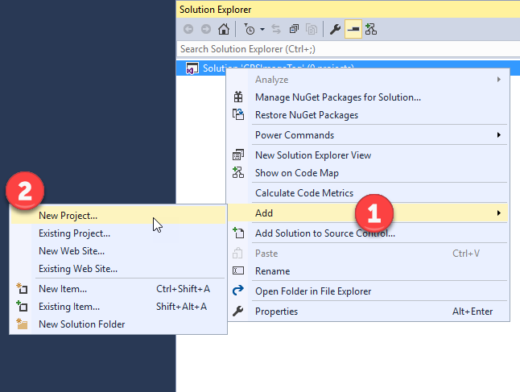
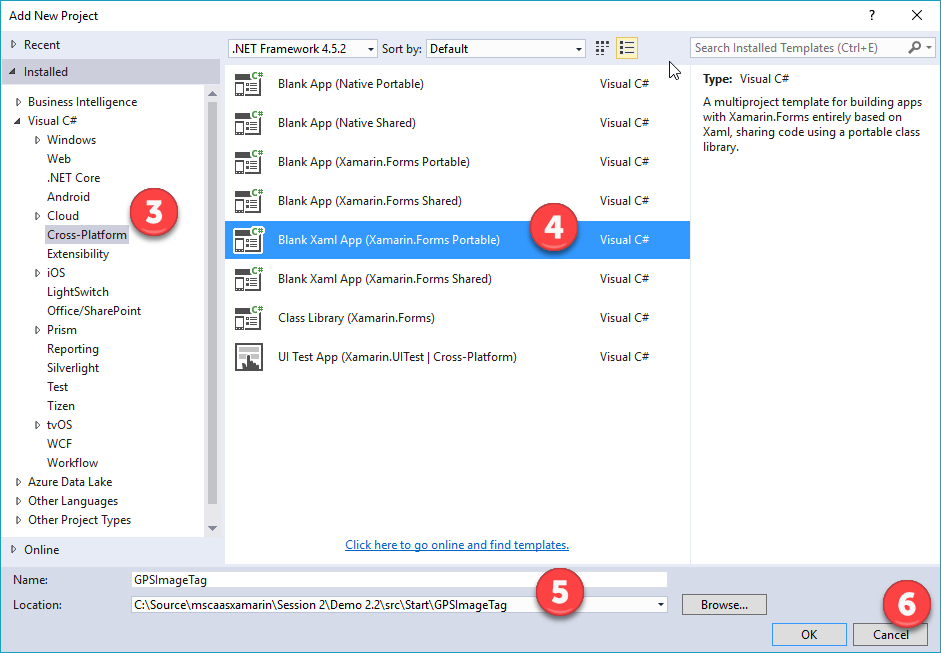
We need to remove both the GPSImageTag.Windows and GPSImageTag.WinPhone projects. First, select the two projects GPSImageTag.Windows and GPSImageTag.WinPhone projects (1). Next, bring up the pop menu and select Remove option (2).
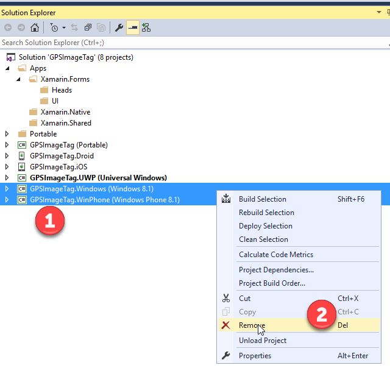
Now, we need to organize our solution by moving the Xamarin heads into the solution folder Apps > Xamarin.Forms > Heads. Use the mouse and drag the following 3 projects GPSImageTag.Droid, GPSImageTag.iOS and GPSImageTag.UWP into the folder Apps > Xamarin.Forms > Heads (1).
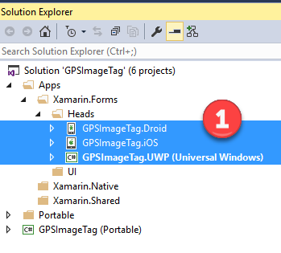
Next step, is to move the final project GSImageTag into the solution folder Apps > Xamarin.Forms > UI. Use the mouse and drag the GPSIamgeTag project into the folder Apps > Xamarin.Forms > UI (1).
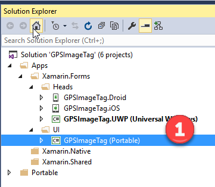
The solution will be using NuGet packages to help with Camera features and platform dialogs. Using these packages saves us time and abstracts the platform specifics for these functions while allowing the features to be used across multiple supported platforms with one piece of calling code. In Xamarin development they are known as plug-ins. The NuGet packages have already been added to the project so we show the audience the NuGet manager and the packages that were added to the solution. Select the Solution file (1). Next, bring up the pop menu and select he Manage NuGet Packages for Solution option (2).
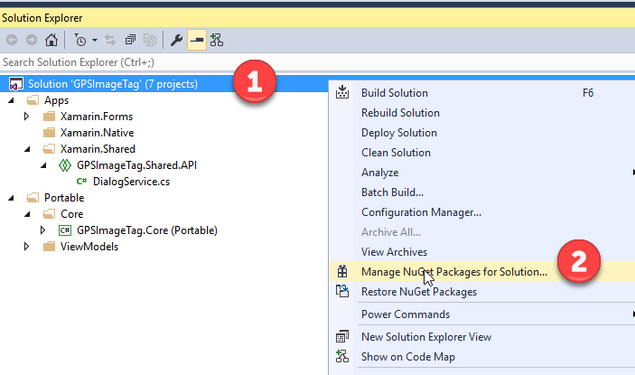
The first Xamarin plugin we want to show is the Xam.Plugin.Media. This plugin abstracts the platform camera features and gives a common API interface for us to use to the camera features. Click on the Installed heading and use the search term Xam.Plugin.Media (1). Point out the version of the plugin being used (2) which indicates which projects are using the NuGet package. Next show that the plugin has been installed in the GPSImage.Core project listed as Portable\Core\GPSImageTag.Core. It is also installed into the heads. It works across all the platforms and is compatible with the Portable class library references by all of the head projects. Last we can point out the plugin details (4).
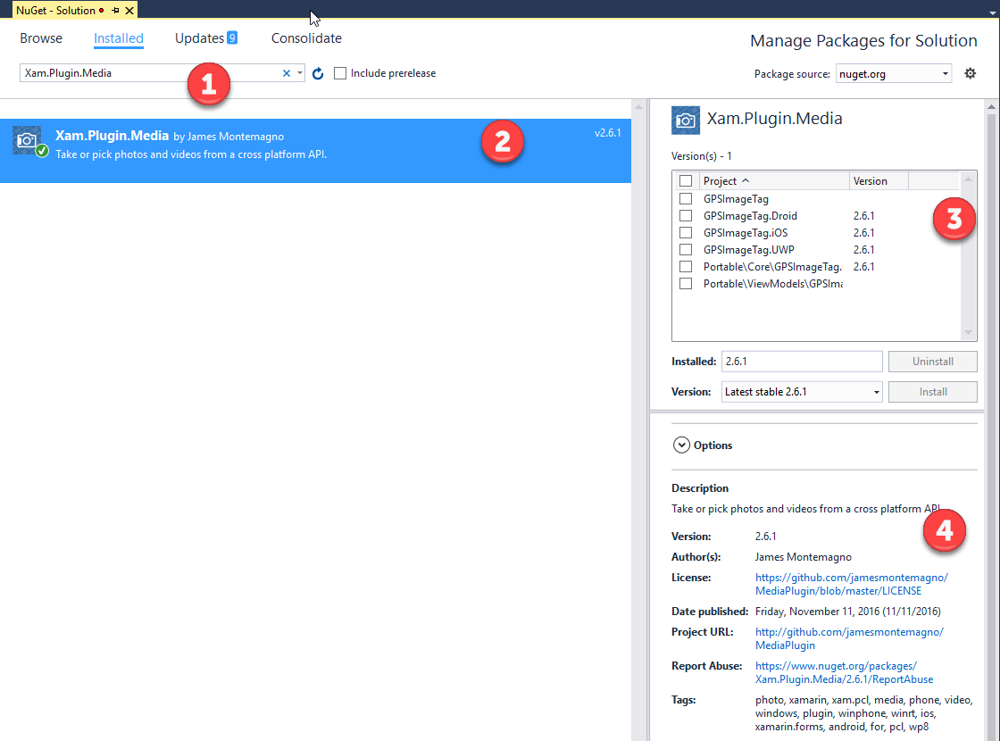
The next plugin we want to show is the Xam.Plugin.Connectiivity. This plugin provides a common interface across each of the platforms for checking network connection. Click on the Installed heading and use the search term Xam.Plugin.Connectivity (1). Point out the version of the plugin being used (2). Next show that the plugin has been installed in the GPSImage.Core project (and the head project) (3). Last we can point out the plugin details (4).
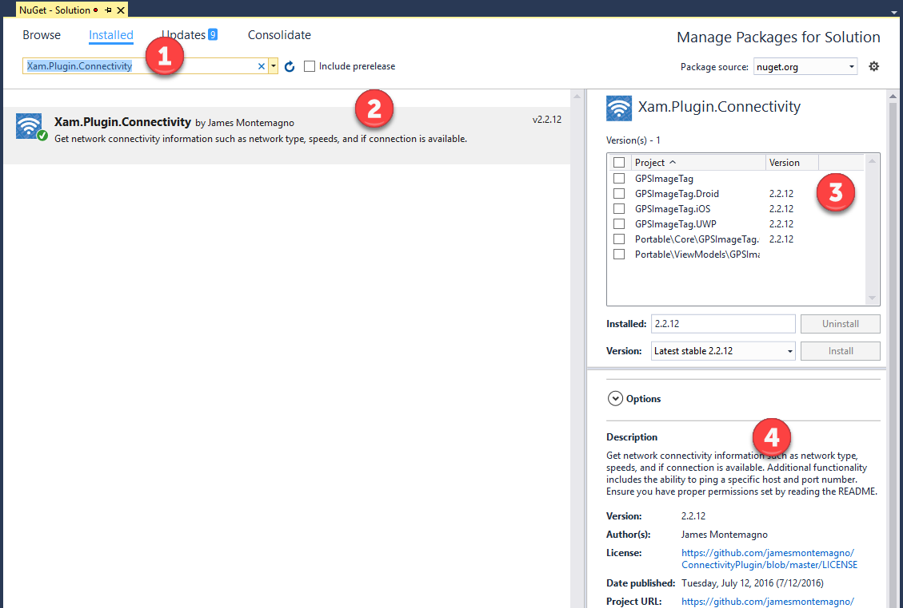
In Solution Explorer, explain that we have the newly added Portable Class Library under the UI folder. Like our other Portable Class libraries this is compatible with and is referenced by all the platform-specific head projects. This one also introduces and has a dependency on the Xamarin.Forms shared UI framework. With the NuGet manager open we need to look for Xamarin.Forms. Click on the Installed heading and use the search term Xamarin.Forms (1). Point out the version of the plugin being used (2). Show that it is used by the UI Portable Class library GPSImageTag. It’s important to point out that it’s best practice to update the Xamarin.Forms core libraries. It provides updates for when Apple, Google and Microsoft release new APIs for the platforms. Plus, updating the Xamarin.Forms core library provides the necessary fixes to work with each of the platforms. Next show that the plugin has been installed into each of the platform heads (3). Last we can point out the plugin details (4).
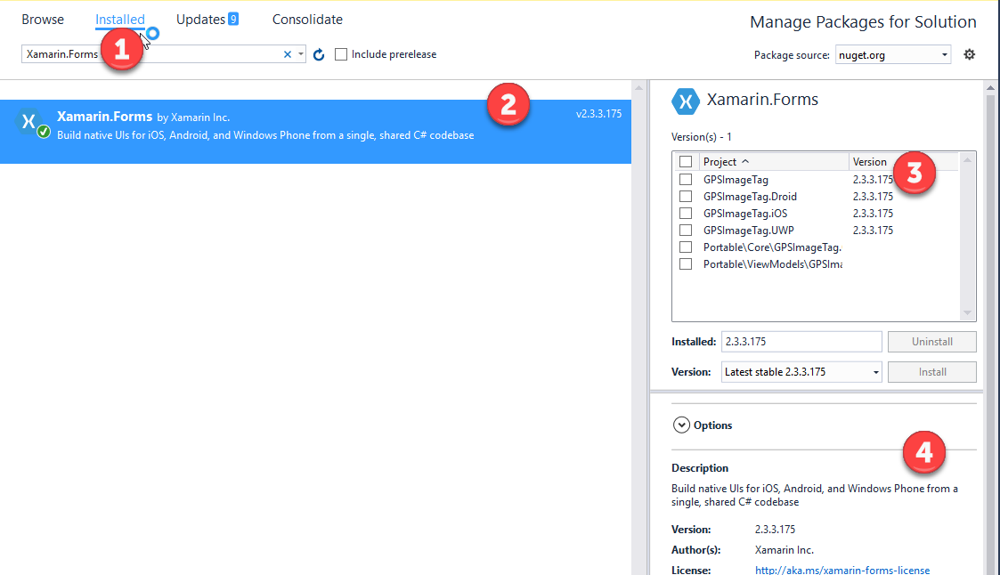
The last Xamarin plugin is AcrDialogs . This plugin provides a common mechanism across each of the platforms for setting up user dialog windows or popups. Click on the Installed heading and use the search term Acr.UserDialogs (1). Point the version of the plugin being used (2). Next show that the plugin has been installed into each of the platform heads (3). Last we can point on the plugin details (4). Explain that this plug-in is specific to the platforms and not used in the Portable Class Library.
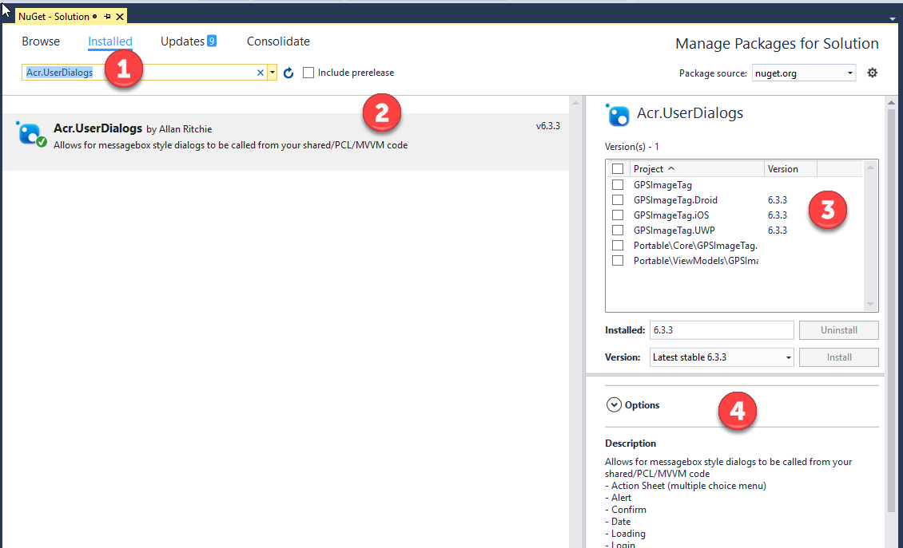
Not all the assemblies used in our project can be used within the Portable Class profile being used within our solution projects. These types of assemblies require specific platform code to function. In this example it’s the dialogs that are created in each of the target platforms that require different APIs.
Fortunately, we can still have common code written once used across each platform and leverage the Nuget package Acr.UserDialogs. We do this with a special kind of project called a Shared project. We already have the project in this solution, but if we were going to create one we would select the Xamarin.Shared folder (1), bring up the pop menu and select the Add option (2), select the New Project option (3).
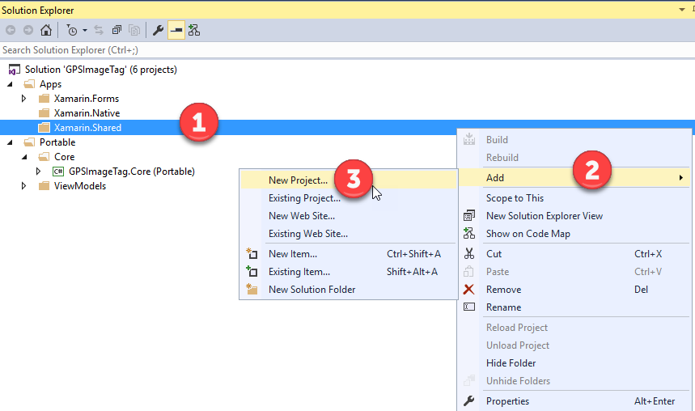
We would then, use the term “Shared” to search (1) for the Shared Project template (2), then name the new project GPSImageTag.Shared.API (3), and then we would click OK, but in this case we’ll click Cancel since we already have the project (4).
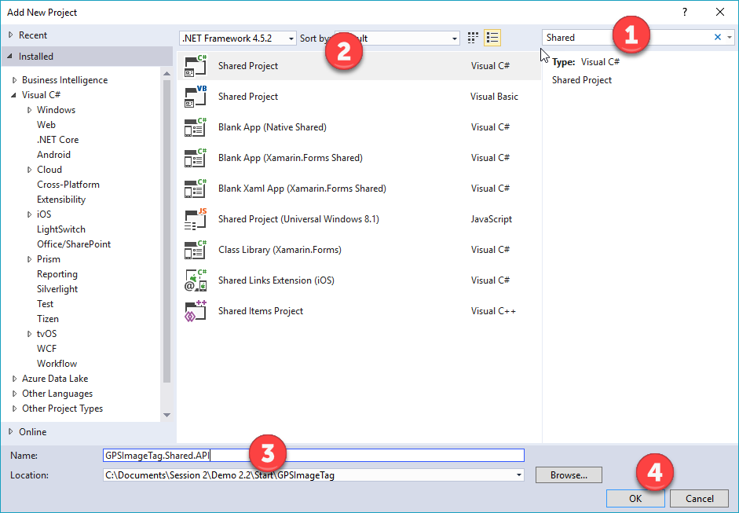
Open up the DialogService.cs under GPSImageTag.Shared.API project. Briefly walkthrough this code. Explain that this is code that we want as part of all the heads.
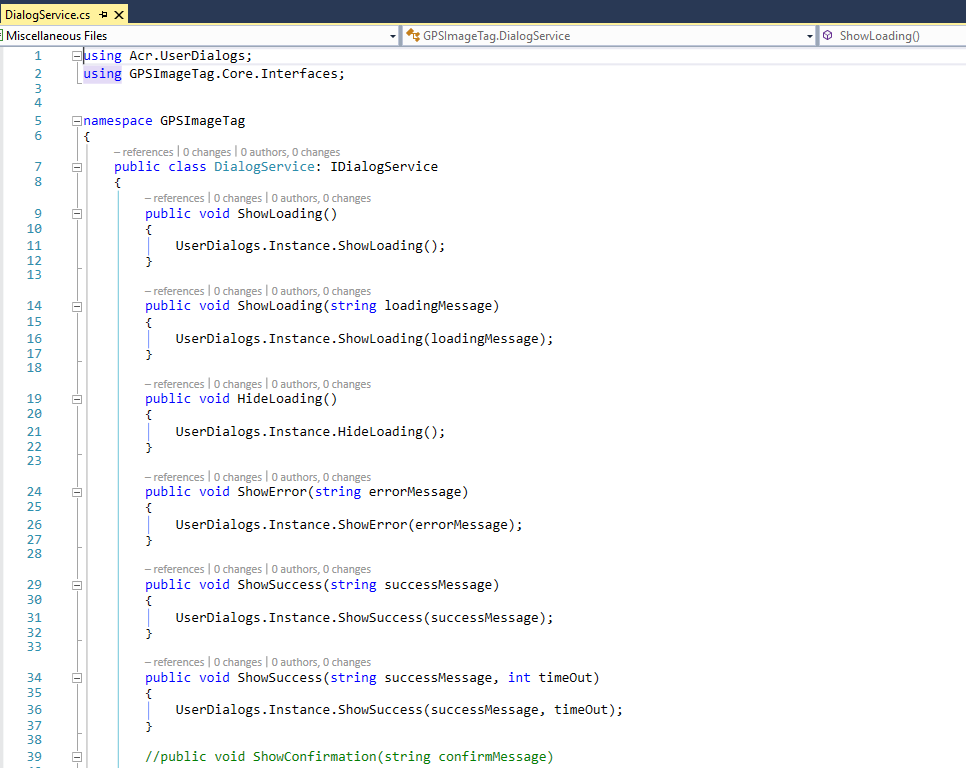
To use this shared project in the heads we need project references in platform-specific UI head projects to the shared projects. Repeat the following 3 steps for each project GPSImageTag.Droid, GPSImageTag.iOS, and GPSImageTag.UWP, select the expand the references node (1) and show the reference to GPSImageTag.Shared.API (2). Also show the reference to the GPSImageTag PCL project used by all heads.
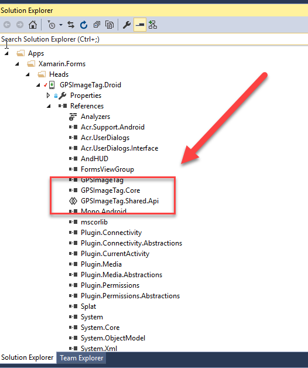
Explain what this means. By having the reference to a Shared project, we are including code files of the shared project code in every project that references it. To be clear, on the other hand the Portable Class libraries are independently built DLLs referenced by platform-specific projects, whereas the shared project is code that builds as part of projects that reference it, as if all the code files has been copied under each project. A shared project does not create its own independent DLL.
Under the shared project, open the file DialogService.cs. Note that in the top-left corner you’ll see a drop-down that allows you to see how the code looks in the context of each of the references platform-specific head projects.
Now, open up the References node (1) for the GPSImage PCL project. Show its reference down to the viewmodel project (2).
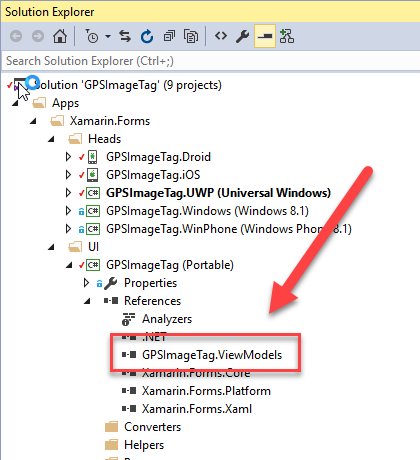
Now let’s see a basic picture taking UI page to test the solution. We’ve updated the boilerplate App.xaml, and MainPage.xaml files already. Open up MainPage.xaml in the GPSImage PCL project to briefly show that it has tabs.
Now open up CameraPage.xaml and briefly explain the UI for taking a picture including the binding to the viewmodel for image output and taking picture command.
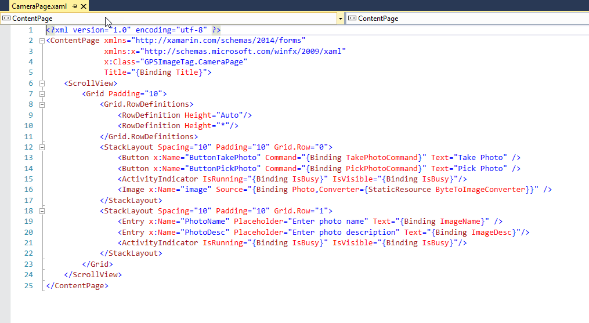
Open up the Colours.cs file under Helpers. Explain that this is used to help provide UI styling.
Go to the converters folder and open up ByteArrayToImageSourceConverter.cs. Explain that this is used to take a byte array of image data from methods or properties in the portable ViewModel class that knows nothing about UI objects, and convert it into an ImageSource object that can be used by Image UI elements.
Open up CameraPageViewMode.cs and explain what it’s doing to provide the picture image and the code that runs when the user clicks to take a photo including use of services injected from the platform level.
Now, we need code within each of the targeted platforms to register the code services available at the platform level against an abstract interface that can be used by the portable viewmodel that knows nothing about specific platform APIs. Open up MainActivity.cs in the GPSImageTag.Droid project and show that we are registering the services.
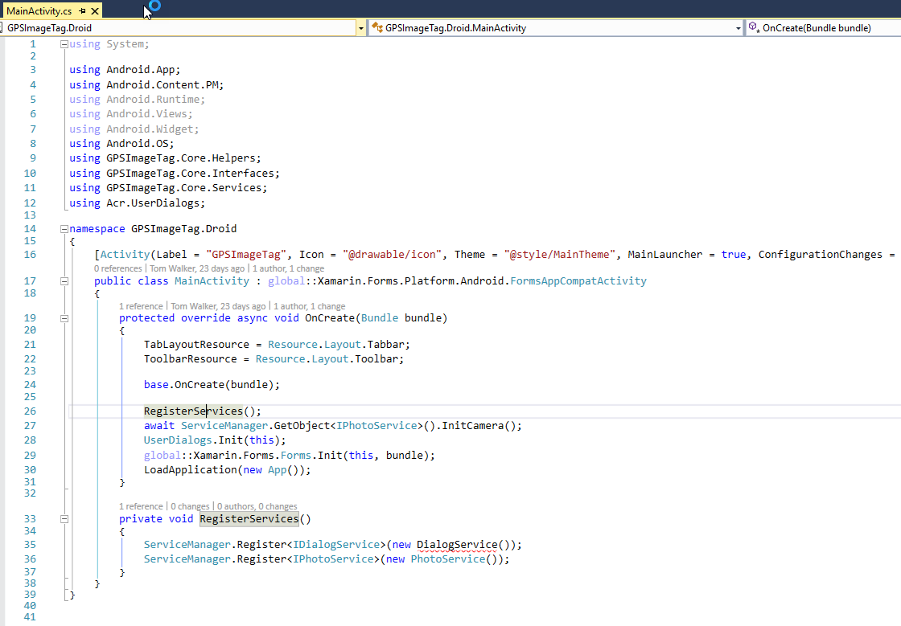
Next, open AppDelegate.cs in GPsImageTag.iOS project and show the registration code.
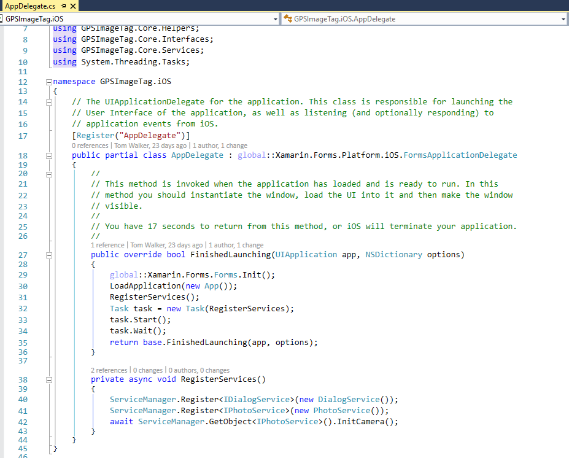
Now, we need the same in the UWP project head as well. open App.xaml.cs in the GPSImageTag.UWP project.
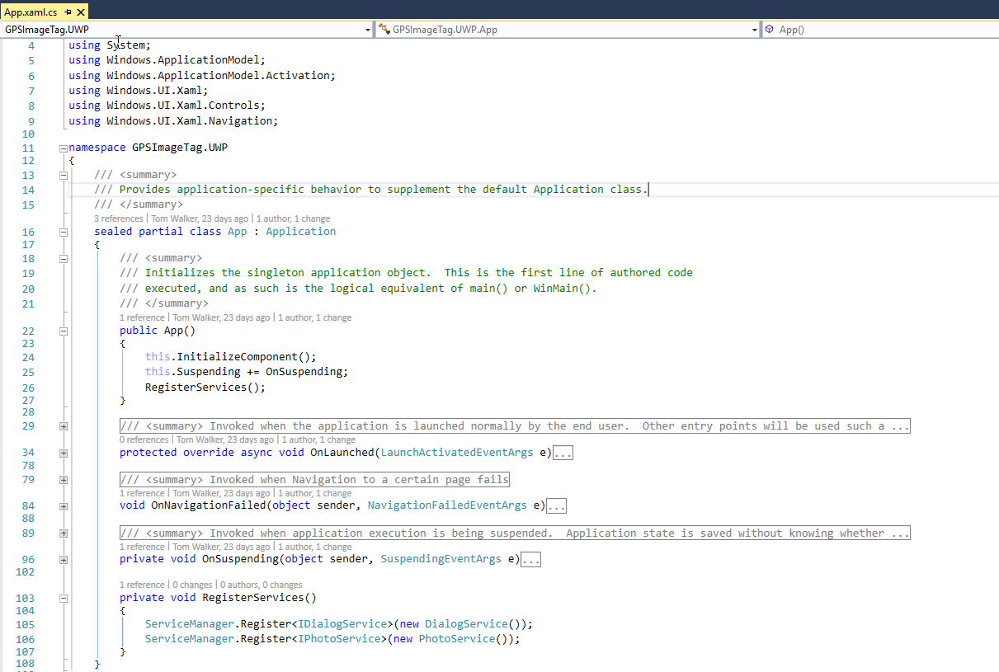
Before running the application, we need to configure the build configuration on the UWP project head. Select the Debug drop down menu option (1). Next, click the Configuration Manager option (2).
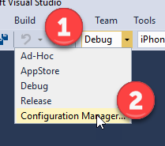
By default, Xamarin.Forms disables the build and deploy action on the GPSImageTag.UWP. Show that both of these have been enabled (1). Next, click the close button (2).
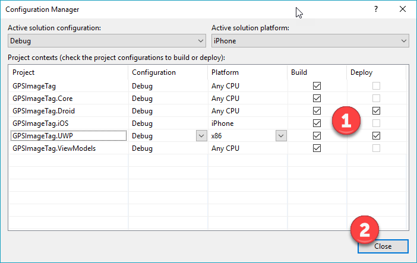
Hit Rebuild the solution.
If you encounter the following error message “CS5001 Program does not contain a static ‘Main’ method suitable for an entry point” perform a clean solution and then rebuild.
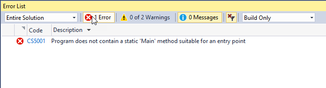
Hit F5 to run the UWP project head.
Next, click on the Take Photo button (1). On the camera screen click the camera button (2).
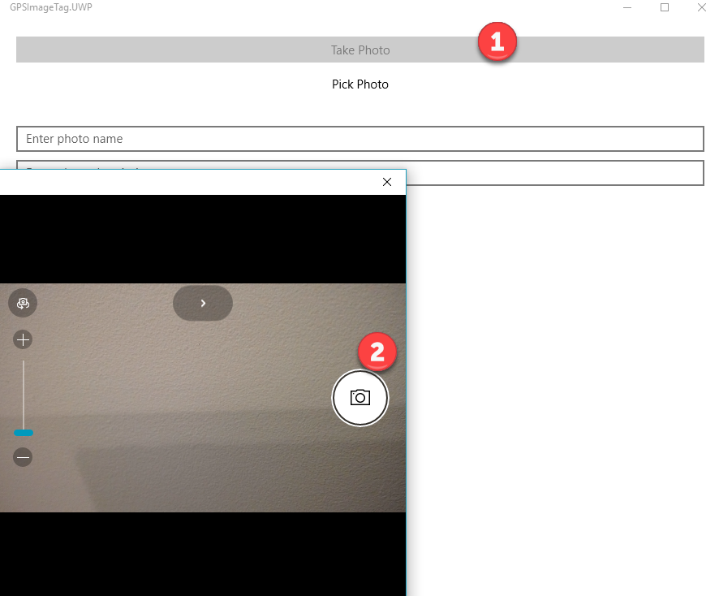
Recap what was accomplished in the demo.